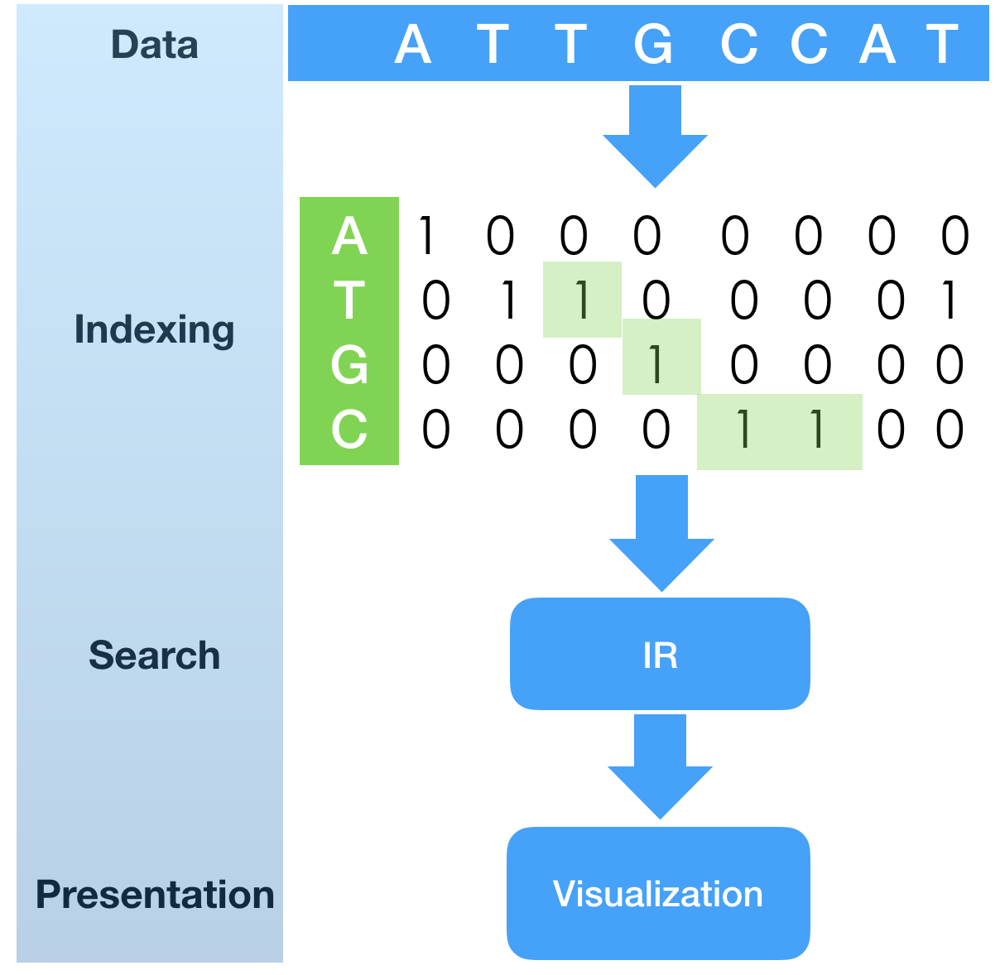
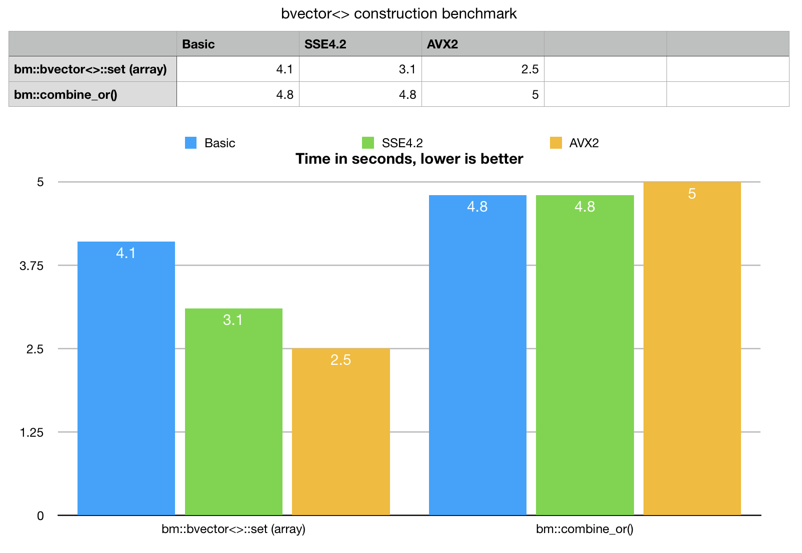
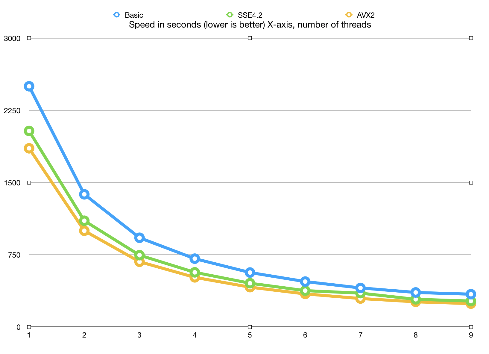
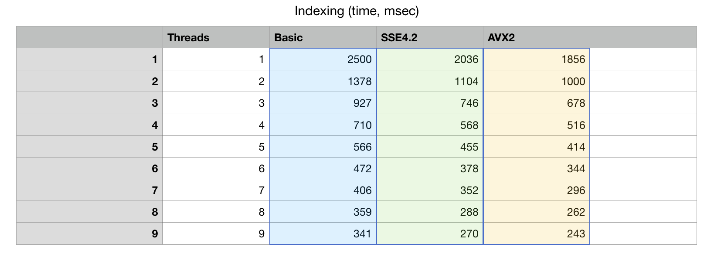

Optimization of bit-vector index construction
Anatoliy Kuznetsov. Nov 2018. anatoliy_kuznetsov@yahoo.com
Introduction
Indexing is an important part of search system life-cycle. Everything starts from building an index. Very often indexing time is amortized and hidden in some overnight, background processes, where index is constructed once and re-used many times. In this scenario index construction speed is a secondary characteristic of the system. In many other scenarios, like real-time data analytics, event monitoring, visualization, index construction can be a real bottleneck and a key point to success. In this tech.note we discuss approaches to fast construction of bit-vectors in BitMagic library, using SIMD acceleration and multi-threading.
 In a previous tech.note “SHIFT-AND substring search with fingerprint bit-vectors” Here we took fingerprint index construction for granted. The sample program as a first phase of the algorithm is to build fingerprint bit-vectors, each representing positions in the nucleotide sequence. Index construction is quite simple in nature: it runs over the sequence of letters and creates sorted (growing) list of unsigned integers, which are transformed into bit-vector fingerprint indexes (one index for each possible element of alphabet).
Indexing is a first step to bring search system from cold state to operational. We want it fast!
Setting of a random bit in a vector looks like a straight-forward problem and yes, it is relatively simple. Running the original benchmark application, you may noticed, how index construction took 3-4 seconds (depends of HW), while search itself could run in less than 1sec. In many cases faster indexing would be extremely useful to have just as a part of a search algorithm.
The most basic property of the data, we can exploit here is that integers come sorted and sequence of eventual bits we are about to set is quite dense. All elements of our alphabet, except N show similar probability (acceptable approximation). This assumption is common not just for indexing of DNA, but for many other information retrieval cases, like text mining, where english words (any language, really) would generate medium to high density vectors.
Accelerated bit-vector construction
BitMagic v.3.16.0 adds new methods to help loading integer indexes.
One is bm::bvector<>::set(const unsigned* idx, unsigned size).

void bvector_bulk_set_test(std::vector<bm::id_t> &v1,
std::vector<bm::id_t> &v2,
std::vector<bm::id_t> &v3)
{
bm::bvector<> bv1, bv2, bv3;
for (unsigned i = 0; i < benchmark_count; ++i)
{
bv1.set(&v1[0], unsigned(v1.size()));
bv2.set(&v2[0], unsigned(v2.size()));
bv3.set(&v3[0], unsigned(v3.size()));
}
}
Usage example and a synthetic benchmark is available at bvsample12
Array set is a method with a simple C-like interface, which takes an array pointer and array size, and loads the data. This method would load the data even if it comes unsorted, but dense and sorted stream of ints - is what this method likes.
Example provides a synthetic, single threaded benchmark for data loading. Lets take a look at the numbers, compare new method with best possible previously available implementation.
As a comparative base line we take bm::combine_or() templated algorithm,
which takes integers “STL-way” as universal iterators, which can be pointers, vector or
list elements, anything C++ iterator resolving into int really.
As an abstract portable algorithm bm::combine_or does not implement SIMD
optimizations, but it is not as simple as just setting random bits.
Combine OR makes an assumption, that input data come sorted and makes an attempt to
optimize bit-address calculations. BitMagic implements an internal block structure to keep
8KB blocks of memory and finding the right block with all checks and allocation house-keeping is
expensive when we set millions of bits. combine_or optimizes over that, trying to segregate
incoming bit indexes and bulk feed data into the target block.
It is often faster than setting bits one by one.
bvector<>::set() as an abstraction of a lower level
algorithm and it uses pointer instead of iterators which gives an option for platform specific
low level SSE4.2 and AVX2 optimizations on top of what was laready done with combine_or().
Benchmark results speaks for itself, bvector<>::set() for arrays outperforms
combine_or() even on basic portable version and really eats the alternative
for breakfast with AVX2. bm::combine_or() does not scale on SIMD,
clang compiler Apple LLVM version 10.0.0 (clang-1000.11.45.5) cannot (yet) vectorize this code.
Why SIMD is faster?
Before going with any variant of SIMD optimization, lets take a look at the bare-bone bit setting code, fetched from the depths of BitMagic library.
inline
void set_block_bits(bm::word_t* BMRESTRICT block,
const unsigned* BMRESTRICT idx,
unsigned start, unsigned stop )
{
for (unsigned i = start; i < stop; ++i)
{
unsigned n = idx[i];
unsigned nbit = unsigned(n & bm::set_block_mask);
unsigned nword = nbit >> bm::set_word_shift;
nbit &= bm::set_word_mask;
bm::word_t mask = (1u << nbit);
block[nword] |= mask;
} // for i
}
Again, this is a fairly simple code, no branches at its core (good for SIMD). Just looking at it looks like a mix of bit operations and memory read-write access. Reading of input integers is streamed, linear, output is scattered.
SSE4.2
SSE4.2 uses 4 int wide 128-bit SIMD vectors and implements a variant of bulk bit setting algorithm, which speculates on probability, that all 4 bits belong to the same word of memory. This is a fair assumption for sorted, medium dense streams of integers. If such an assumption comes true, the algorithm computes a target bit-mask using scalar code, then sets 4 bits at once to the target word. As our benchmark numbers show, this speculation works, at least in the synthetic case.
SSE4.2 optimization is based on vectorization of logical operations and an attempt to probabilistically minimize repeated memory access to the same word. Modern CPU will surely take all possible steps to fuse and optimize the read-stores, but optimization of memory access is very important for "everything bit-vector".
inline
void sse42_set_block_bits(bm::word_t* BMRESTRICT block,
const unsigned* BMRESTRICT idx,
unsigned start, unsigned stop )
{
const unsigned unroll_factor = 4;
const unsigned len = (stop - start);
const unsigned len_unr = len - (len % unroll_factor);
idx += start;
unsigned BM_ALIGN16 mshift_v[4] BM_ALIGN16ATTR;
unsigned BM_ALIGN16 mword_v[4] BM_ALIGN16ATTR;
__m128i sb_mask = _mm_set1_epi32(bm::set_block_mask);
__m128i sw_mask = _mm_set1_epi32(bm::set_word_mask);
unsigned k = 0;
for (; k < len_unr; k+=unroll_factor)
{
__m128i idxA = _mm_loadu_si128((__m128i*)(idx+k));
__m128i nbitA = _mm_and_si128 (idxA, sb_mask); // nbit = idx[k] & bm::set_block_mask
__m128i nwordA = _mm_srli_epi32 (nbitA, bm::set_word_shift); // nword = nbit >> bm::set_word_shift
nbitA = _mm_and_si128 (nbitA, sw_mask);
_mm_store_si128 ((__m128i*)mshift_v, nbitA);
// check-compare if all 4 bits are in the very same word
//
__m128i nwordA_0 = _mm_shuffle_epi32(nwordA, 0x0); // copy element 0
__m128i cmpA = _mm_cmpeq_epi32(nwordA_0, nwordA); // compare EQ
if (_mm_test_all_ones(cmpA)) // check if all are in one word
{
unsigned nword = _mm_extract_epi32(nwordA, 0);
block[nword] |= (1u << mshift_v[0]) | (1u << mshift_v[1])
|(1u << mshift_v[2]) | (1u << mshift_v[3]);
}
else // bits are in different words, use scalar scatter
{
_mm_store_si128 ((__m128i*)mword_v, nwordA);
block[mword_v[0]] |= (1u << mshift_v[0]);
block[mword_v[1]] |= (1u << mshift_v[1]);
block[mword_v[2]] |= (1u << mshift_v[2]);
block[mword_v[3]] |= (1u << mshift_v[3]);
}
} // for k
for (; k < len; ++k)
{
unsigned n = idx[k];
unsigned nbit = unsigned(n & bm::set_block_mask);
unsigned nword = nbit >> bm::set_word_shift;
nbit &= bm::set_word_mask;
block[nword] |= (1u << nbit);
} // for k
}
AVX2
AVX2 is a 256-bit SIMD set and it has a more robust set of instructions. Very instrumental is that with AVX2 there is a way to set bits inside AVX2 register.
I would like to show code, which sets bits in 256-bit AVX register by a source vector, containing 8 integer indexes. It may appear as one cryptic piece of code ( like many things SIMD), but it is a key to the algorithm. Please note that it uses pairs of independent intrinsics like _mm256_sub_epi32, _mm256_sllv_epi32 and it was done on purpose, to better use superscalar capabilities on Intel CPUs, which can run more than none 256-bit instruction at a time, if there are no data dependencies.
inline
__m256i avx2_setbit_256(__m256i target, __m256i source)
{
__m256i stride_idx = _mm256_set_epi32(224, 192, 160, 128, 96, 64, 32, 0);
__m256i mask1 = _mm256_set1_epi32(1);
__m256i v0, v1, acc1, acc2;
v0 = _mm256_permutevar8x32_epi32(source, _mm256_set1_epi32(0));
v1 = _mm256_permutevar8x32_epi32(source, _mm256_set1_epi32(1));
v0 = _mm256_sub_epi32(v0, stride_idx);
v1 = _mm256_sub_epi32(v1, stride_idx);
v0 = _mm256_sllv_epi32(mask1, v0);
v1 = _mm256_sllv_epi32(mask1, v1);
acc1 = _mm256_or_si256(v1, v0);
v0 = _mm256_permutevar8x32_epi32(source, _mm256_set1_epi32(2));
v1 = _mm256_permutevar8x32_epi32(source, _mm256_set1_epi32(3));
v0 = _mm256_sub_epi32(v0, stride_idx);
v1 = _mm256_sub_epi32(v1, stride_idx);
v0 = _mm256_sllv_epi32(mask1, v0);
v1 = _mm256_sllv_epi32(mask1, v1);
acc2 = _mm256_or_si256(v1, v0);
target = _mm256_or_si256(target, acc1);
v0 = _mm256_permutevar8x32_epi32(source, _mm256_set1_epi32(4));
v1 = _mm256_permutevar8x32_epi32(source, _mm256_set1_epi32(5));
v0 = _mm256_sub_epi32(v0, stride_idx);
v1 = _mm256_sub_epi32(v1, stride_idx);
v0 = _mm256_sllv_epi32(mask1, v0);
v1 = _mm256_sllv_epi32(mask1, v1);
acc1 = _mm256_or_si256(v1, v0);
target = _mm256_or_si256(target, acc2);
v0 = _mm256_permutevar8x32_epi32(source, _mm256_set1_epi32(6));
v1 = _mm256_permutevar8x32_epi32(source, _mm256_set1_epi32(7));
v0 = _mm256_sub_epi32(v0, stride_idx);
v1 = _mm256_sub_epi32(v1, stride_idx);
v0 = _mm256_sllv_epi32(mask1, v0);
v1 = _mm256_sllv_epi32(mask1, v1);
acc2 = _mm256_or_si256(v1, v0);
target = _mm256_or_si256(target, acc1);
target = _mm256_or_si256(target, acc2);
return target;
}
Intentionally we avoid going into quoting the full source code of the bit scattering algorithm here, limiting it to just a few key pieces. BitMagic library is open-source for curious minds.
How it all translates to a real life DNA indexing use case? Yes, coming back to it.
DNA indexing benchmark
Indexing benchmark, as a sample application uses a high level approach. BitMagic 3.16.0 provides a new fancy (if C++ interator can be called fancy) inserter iterator, called bulk_insert_iterator (part of bm::bvector<>) to incorporate all the buffering logic and periodically call the low level internals with SSE4.2 and AVX2 kernels.
void BuildBulk(const vector<char>& sequence)
{
bm::bvector<>::bulk_insert_iterator iA(m_FPrintBV[eA], bm::BM_SORTED);
bm::bvector<>::bulk_insert_iterator iC(m_FPrintBV[eC], bm::BM_SORTED);
bm::bvector<>::bulk_insert_iterator iG(m_FPrintBV[eG], bm::BM_SORTED);
bm::bvector<>::bulk_insert_iterator iT(m_FPrintBV[eT], bm::BM_SORTED);
bm::bvector<>::bulk_insert_iterator iN(m_FPrintBV[eN], bm::BM_SORTED);
for (size_t i = 0; i < sequence.size(); ++i)
{
unsigned pos = unsigned(i);
switch (sequence[i])
{
case 'A':
iA = pos;
break;
case 'C':
iC = pos;
break;
case 'G':
iG = pos;
break;
case 'T':
iT = pos;
break;
case 'N':
iN = pos;
break;
default:
break;
}
}
}
Multi-threading
A question we tried to answer is how all this machinery scales in multi-threaded situations. The problem with many bit-vector algorithms is that while fast they tend to be limited by memory bandwidth and in many-core situations, bandwidth is a very limited resource. Algorithms here try to address this and take into account not just SIMD parallelization but also memory access patterns and memory locality (L1/L2 cache proximity). There are reports (Daniel Lemire) that just 2 cores may be enough to saturate memory subsystem.
How much index building can be improved with multi-threading?
We created a sample application xsample04a.cpp.
Parallel index construction is easy in this case. The benchmark human chr1 is the largest chromosome and it is 250MB in size (8% of the genome). Fingerprint construction is linear, it should be very easy to split the processing, based on genomic coordinates and at the end just join the result vectors with logical OR. Should be easy to try, given that Modern C++ offers rudimentary (yet very useful) support for tasks in form of async execution.
One little detail worth mentioning here is a new method for merging results.
It is bm::bvector<>::merge() which is an equivalent of logical OR,
except that it uses its argument as a temporary vector and steals whole blocks of data from it,
where possible avoiding expensive memory copies (another bandwidth optimization!).
DNA fingerprint construction benchmark
Single threaded AVX2 run:
./xsample04a_avx2 -fa ../xsample04/fasta.fa -t -j 1 FASTA sequence size=248956422 jobs = 1 Performance: 1. Parse FASTA; 1.676 sec 2. Build DNA index; 3.113 sec 3. Build DNA index (bulk, parallel); 1.863 sec
From this benchmark run we see that single threaded construction of indexes with bulk_insert_iterator take 1.8 seconds versus 3.1seconds for more conventional insert iterator. This is a solid 30% increase in performance, you can achieve in the semantically same C++ envelope. All low level optimizations are well hidden in the engine compartment.
What about MT scaling?
 
Here is a graph of how the algorithm scales with adding more and more cores. This Xeon CPU has 8 physical cores and 16 virtual SMT threads.
The algorithm scales to 8 cores, which is very decent result, given that we did not use any
special tricks to accelerate parallel processing, final bvector<>::merge() is synced
with a set of std::mutex objects and it is possible to do better than that
(it is our choice to avoid threading tricks at this point).
Measurements show that there is little life above 8 cores, which is understandable: SMT (hyper-threads) while useful for I/O bound tasks are not as efficient at highly optimized applications.
With all optimization combined it should be possible to do human chr1 index construction in 300ms on Intel Xeon with just 8 physical cores (I/O times not accounted).
Real life application should to take steps to avoid performance degradation at the reduce stage where we have "merge" bottleneck (use proper map-reduce) and thread pools (see TBB, CPP TaskFlow libraries) for MT task oriented programming.
AVX-512?
It is tempting to implement all the described techniques using AVX-512 SIMD set. Hope to get back to it later this year.
Source code is available on GitHub
Reference material
- Index construction benchmark. xsample04a.cpp
- bit-vector set operations example and benchmark. sample12.cpp
- bvector<>::merge() sample sample19.cpp
- SHIFT-AND substring search with fingerprint bit-vectors. DNA Search